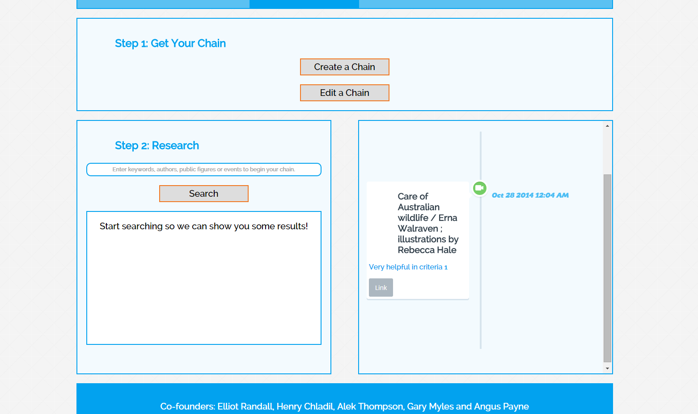
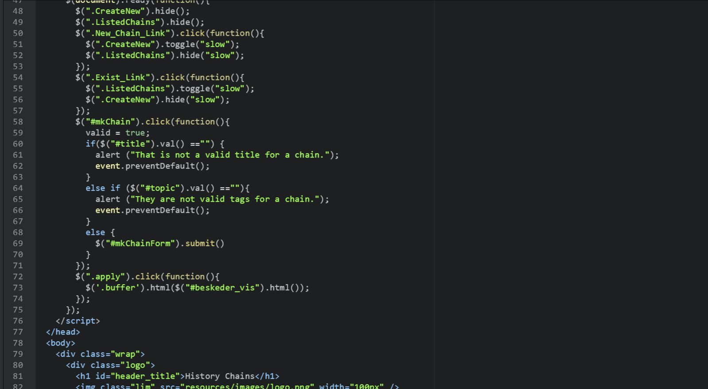
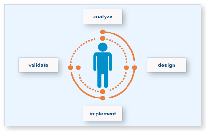
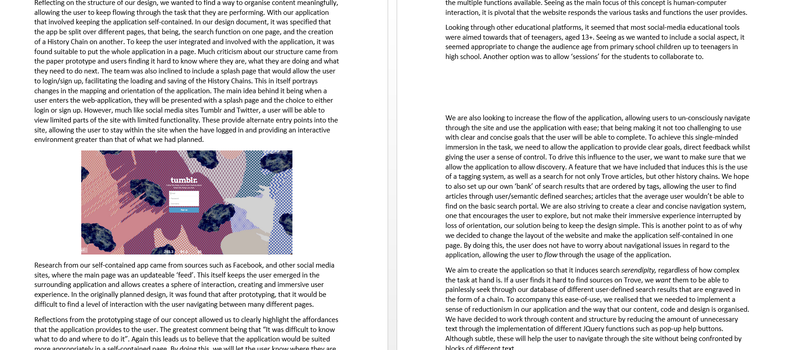
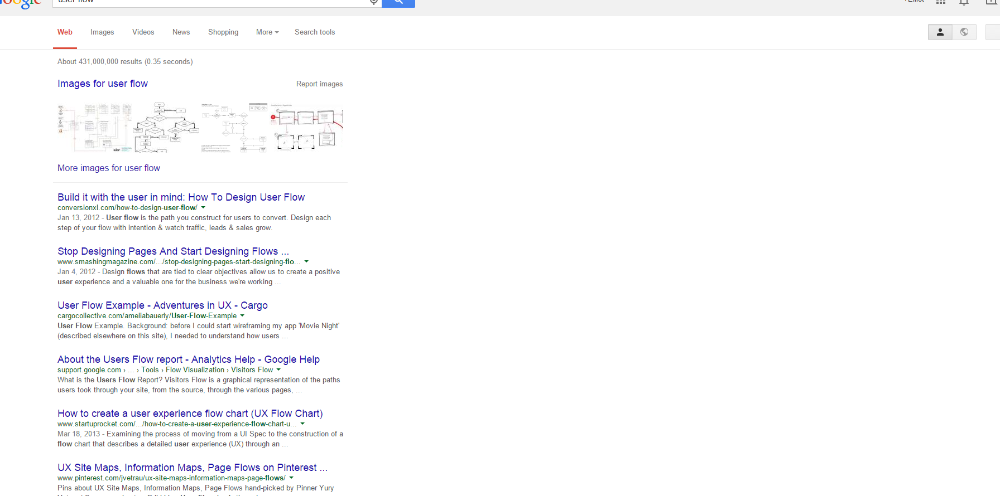

My Implementation
At the start of the implementation stage, after many hours of research and design, I thought it appropriate to get straight into the implementation. The first implementation task I undertook was the HTML/CSS/JavaScript of the site. With relevant wireframes and mockups, this was a breeze. I made a concious effort to keep the HTML/CSS design as close as possible to the mockups, and that extra effort really paid off. Creating a view that is responsive and logically dependent from the model and controller was of great importance for the group. I was also keen on including a timeline plugin that would best suit the users need and incude flow. After experimenting with many horizontal timelines and after countless discussions with tutors and peers about the useability of them, it seemed that they just didn't work. The width for the timeline div was just to small, and to change this, would interupt user flow. I later found vertical timeline plugin, by Cody House. Responsive, customizable, hidden and highly aesthetic, it suited our application perfectly. After formulating the view, through JavaScript/HTML/CSS, the team had a solid base to work off and develop the model and controller.
It was also in my interests to implement the database of the website. This was quite simple, seeing as I had formulated a design using ER and DFD constructs. By running a few queries I was able to create the tables and import some dummy data. Though I did a little more than that. Because of the design of the database, I had to create transactions for writing data to the database. By following the properties of ACID, these transactions would maintain the integrity of our database unlike using simple queries. Triggers also had to be implemented into the database, an example being; a trigger that checked what 'chain' the user had open and if the opened a new one, changed the active value accordingly.
I also implemented the first version of the search, and incorporated a connection with Trove. By exploring JSON and filtering data and displaying using JQuery, I was able to create a search model in which allowed us to filter the datasets on Trove through relevance. Although this was later changed by another team member to incorporate AJAX, it still provided me with a better understanding of the Trove API and the manipulation of URL's.
 Further Research
From the start of the project, I wanted to include many design principles that would help improve user experience. User flow was the first idea that intereted me after further research in the project. I tried to design our application to cater for both experience based and goal based learners. After the week 8 lecture, I was able to source valuable information and ideas about how our website is laid out, and how users interact with it. After being introduced into the concept of flow and reduction-ism, I took it upon myself to try and reflect those design patterns/values into our concept. After the paper prototyping and the feedback the team received, it was found that we needed to really pull together and create an application that would induce user flow. Exploring new design techniques and trying to find different ways to do this was quite challenging, the team having spent a substantial amount of time trying to find examples of websites which pull it off nicely. The first example that came to mind was the Facebook news-feed sidescroller which we looked to emulate in the design of our concept. That being; having the chain and search widget side by side saving space and reducing the amount of scrolling the user has to do. It was also helpful in the fact that because the chain is implemented to be auto-updating, the user will be able to become immersed into the task because they only have to interact with two side-by-side divisions.
Recently, throughout my other subjects, I was introduced to ideas that include Big Data, the semantic web and linked data. Being curious, I explore these topics, and tried to incorporate their many principles into our concept. I found that our concept could utilise the principles of linked data in a way to help users swim through the abundant data on Trove. By allowing users to tag and sort sources semantically, we could help them find information faster, and in better context. I also noticed that during our implementation of the site, things started to get a little complicated; divs were scattered all over the place and it was a logical and orientational mess. I looked into different types of design patterns to keep the site looking simple and uncluttered. Reductionism was an interesting design method which I looked into quite extensively.

The Report
I also conqured the endless pages of the report. After conducting extra research, there was an abundance of information to report on, as well as our progression throughout the implementation stage. In the report, I deliberated on not only our progression throughout the implementation, but on the different design patterns that we wanted to implement, these either being design or software orientated. Further research of existing websites were also conducted and influence was taken from many. One of these being Flickr. From this, I proposed the splash page pattern, and how it could possibly immerse users into our application.
A large chunk of the report was also dedicated to 'Response to Feedback'. During this stage, our team conducted many stages of user testing. We wanted to make sure that as we implement new aspects, the user is able to fully immerse themselves with the application. Many users mentioned that they had trouble navigating around the site. I found this a good oppurtunity to refine our design and discuss with the team of what we could do. We decided to dumb it down; make the app self contained and shrink some of the divs. In the report I focused on these changes; with the conclusion that the changes would help immerse the user and create user flow.
 Reflection
Looking back through my implementation in Part B, I thought that I could have spent a little more time on the filtering of the datasets. For me, exploring with JSON and understanding how the data was stored and could be accessed was a breakthrough. At the end of the project, I now look back and wish that I had spent some more time exploring the possibilities of JSON and data set manipulations, though it is something that I look foward to experimenting with in the near future. But what have I learnt and what did I get out of Part B? From Part B I learnt a whole lot more about web design, database design, JSON and simple CRUD databases.
I also found that creating user flow was harder than expected. It was not until after using testing that I was able to go back to the origional design and make some changes. This and even the core functionality of the website was something that I had mis-interpreted, and as a result, I was designing for myself and not the user. I find that in design this is quite a common thing to happen. If it was not for user testing and getting our product out there, that we may not have created user flow, and instead, created an application that did not suit the needs of the target audience. Though we all learn from our mistakes, and in spite of this, I have now learned the importance of meeting a clients objectives and targeting an audience.